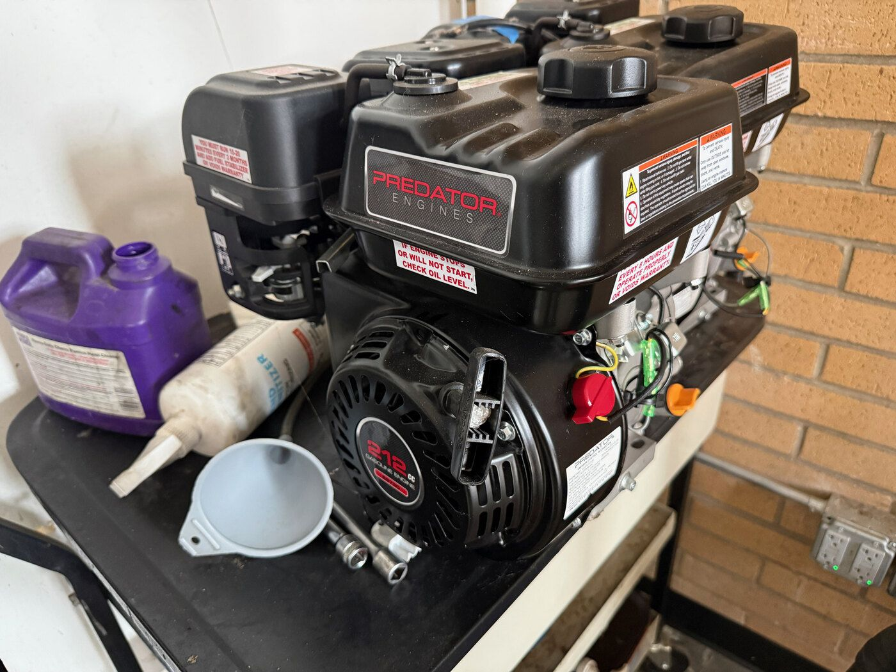
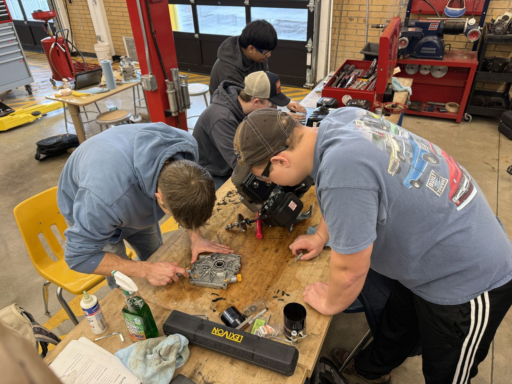

<title>Predator 212 Rebuild Guide</title>
<meta name="claude:viewport-fit-sides" content="cover">
<link rel="preconnect" href="https://fonts.googleapis.com">
<link rel="preconnect" href="https://fonts.gstatic.com" crossorigin>
<link href="https://fonts.googleapis.com/css2?family=Inter:wght@400;500;600;700&family=Playfair+Display:ital,wght@0,500;0,700;1,500&display=swap" rel="stylesheet">
<style>
/* Layout: same system as promptaieducation.com. 980px reading column, 1120px wide band, step cards, one rule band. */
:root {
  --white: #ffffff;
  --off-white: #fafafa;
  --gray-50: #f5f5f7;
  --gray-100: #e8e8ed;
  --gray-200: #d2d2d7;
  --gray-300: #c7c7cc;
  --gray-400: #86868b;
  --gray-600: #6e6e73;
  --gray-800: #1d1d1f;
  --black: #000000;
  --accent: #0071e3;
  --accent-hover: #0077ed;
  --accent-light: #e8f2ff;
  --success: #34c759;
  --warning: #f5a623;
  --danger: #ff3b30;
  --yes-bg: #e9f8ec;
  --no-bg: #fff1e6;
  --font-body: 'Inter', -apple-system, BlinkMacSystemFont, sans-serif;
  --font-display: 'Playfair Display', Georgia, serif;
  --max-width: 980px;
  --max-width-wide: 1120px;
  --ease-out: cubic-bezier(0.25, 0.46, 0.45, 0.94);
  --radius: 16px;
  --radius-lg: 24px;
}
@media (prefers-color-scheme: dark) {
  :root:not([data-theme="light"]) {
    --white: #1d1d1f; --off-white: #161618; --gray-50: #2a2a2c; --gray-100: #3a3a3c; --gray-200: #48484a;
    --gray-300: #636366; --gray-400: #98989d; --gray-600: #aeaeb2; --gray-800: #f5f5f7; --black: #ffffff;
    --accent: #2997ff; --accent-hover: #64b5f6; --accent-light: #1a2a3a; --yes-bg: #1b2e20; --no-bg: #3a2a1a;
    color-scheme: dark;
  }
}
:root[data-theme="dark"] {
  --white: #1d1d1f; --off-white: #161618; --gray-50: #2a2a2c; --gray-100: #3a3a3c; --gray-200: #48484a;
  --gray-300: #636366; --gray-400: #98989d; --gray-600: #aeaeb2; --gray-800: #f5f5f7; --black: #ffffff;
  --accent: #2997ff; --accent-hover: #64b5f6; --accent-light: #1a2a3a; --yes-bg: #1b2e20; --no-bg: #3a2a1a;
  color-scheme: dark;
}

*, *::before, *::after { box-sizing: border-box; margin: 0; padding: 0; }
html { scroll-behavior: smooth; -webkit-text-size-adjust: 100%; }
@media (prefers-reduced-motion: reduce) { html { scroll-behavior: auto; } }
body {
  font-family: var(--font-body); font-size: 17px; line-height: 1.65;
  color: var(--gray-800); background: var(--white);
  -webkit-font-smoothing: antialiased; overflow-x: hidden;
}
body::before { content: ""; position: fixed; inset: 0 0 auto; height: env(safe-area-inset-top, 0px); z-index: 10; background: var(--white); }
h1, h2, h3 { font-family: var(--font-display); font-weight: 500; line-height: 1.15; text-wrap: balance; }
a { color: var(--accent); text-decoration: none; transition: color 0.2s var(--ease-out); }
a:hover { color: var(--accent-hover); }
a:focus-visible, button:focus-visible, summary:focus-visible { outline: 2px solid var(--accent); outline-offset: 3px; border-radius: 3px; }
img { max-width: 100%; height: auto; display: block; }
svg { max-width: 100%; height: auto; }
.container, .container--wide {
  margin: 0 auto;
  padding-left: max(24px, env(safe-area-inset-left, 0px));
  padding-right: max(24px, env(safe-area-inset-right, 0px));
}
.container { max-width: var(--max-width); }
.container--wide { max-width: var(--max-width-wide); }
section { padding-block: 88px; }
.section-header { text-align: center; margin-bottom: 48px; }
.section-header h2 { font-size: clamp(1.8rem, 3.8vw, 2.6rem); letter-spacing: -0.02em; margin-bottom: 12px; }
.section-header p { font-size: 1.05rem; color: var(--gray-600); max-width: 640px; margin: 0 auto; }
.eyebrow { font-size: 12px; font-weight: 600; letter-spacing: 0.08em; text-transform: uppercase; color: var(--accent); margin-bottom: 14px; }
p + p { margin-top: 1em; }
strong { font-weight: 600; }
.num { font-variant-numeric: tabular-nums; }

/* NAV */
.site-nav {
  position: sticky; top: env(safe-area-inset-top, 0px); z-index: 100;
  background: color-mix(in srgb, var(--white) 82%, transparent);
  backdrop-filter: saturate(180%) blur(20px); -webkit-backdrop-filter: saturate(180%) blur(20px);
  border-bottom: 1px solid var(--gray-100);
}
.site-nav__inner {
  max-width: var(--max-width-wide); margin: 0 auto; height: 52px;
  padding-left: max(24px, env(safe-area-inset-left, 0px)); padding-right: max(24px, env(safe-area-inset-right, 0px));
  display: flex; align-items: center; justify-content: space-between; gap: 16px;
}
.site-nav__brand { display: flex; align-items: center; gap: 10px; white-space: nowrap; }
.site-nav__logo { font-weight: 700; font-size: 14px; color: var(--gray-800); }
.site-nav__badge { font-size: 10px; font-weight: 600; letter-spacing: 0.06em; text-transform: uppercase; color: var(--accent); background: var(--accent-light); padding: 3px 8px; border-radius: 999px; }
.site-nav__links { display: flex; gap: 22px; list-style: none; overflow-x: auto; scrollbar-width: none; }
.site-nav__links::-webkit-scrollbar { display: none; }
.site-nav__links a { font-size: 13px; font-weight: 500; color: var(--gray-600); white-space: nowrap; }
.site-nav__links a:hover { color: var(--gray-800); }

/* HERO */
.hero { padding: 96px 0 64px; text-align: center; }
.hero h1 { font-size: clamp(2.2rem, 5.5vw, 3.6rem); letter-spacing: -0.025em; max-width: 820px; margin: 0 auto 22px; }
.hero__sub { font-size: 1.15rem; color: var(--gray-600); max-width: 640px; margin: 0 auto 32px; }
.hero__actions { display: flex; gap: 12px; justify-content: center; flex-wrap: wrap; }
.btn { display: inline-flex; align-items: center; gap: 8px; padding: 12px 22px; border-radius: 999px; font-weight: 500; font-size: 15px; transition: background 0.2s, color 0.2s, transform 0.2s; }
.btn--primary { background: var(--accent); color: #fff; }
.btn--primary:hover { background: var(--accent-hover); color: #fff; }
.btn--secondary { background: var(--gray-50); color: var(--gray-800); }
.btn--secondary:hover { background: var(--gray-100); color: var(--gray-800); }
.btn svg { width: 16px; height: 16px; }

/* PHOTO BANNER */
.photo-banner { position: relative; background: #1d1d1f; max-height: 560px; overflow: hidden; }
.photo-banner img { width: 100%; height: 100%; object-fit: cover; max-height: 560px; }
.photo-banner__overlay { position: absolute; left: 0; right: 0; bottom: 0; padding: 48px 24px 18px; background: linear-gradient(transparent, rgba(0,0,0,0.6)); }
.photo-banner__text { color: #fff; font-size: 13px; font-weight: 500; opacity: 0.9; }

/* STATS STRIP */
.stats-strip { background: var(--gray-50); border-top: 1px solid var(--gray-100); border-bottom: 1px solid var(--gray-100); }
.stats-strip__inner { display: grid; grid-template-columns: repeat(4, 1fr); gap: 24px; padding-block: 40px; }
.stat-item { text-align: center; }
.stat-item__number { font-family: var(--font-display); font-size: 2.4rem; font-weight: 700; color: var(--gray-800); line-height: 1; font-variant-numeric: tabular-nums; }
.stat-item__label { font-size: 13px; color: var(--gray-600); margin-top: 8px; }

/* RULE BAND */
.rule-band { background: var(--gray-800); color: var(--white); padding-block: 56px; text-align: center; }
.rule-band p { font-family: var(--font-display); font-size: clamp(1.3rem, 2.6vw, 1.8rem); max-width: 760px; margin: 0 auto 10px; text-wrap: balance; }
.rule-band small { color: var(--gray-300); font-size: 14px; }

/* STEP CARDS */
.steps { display: grid; grid-template-columns: repeat(3, 1fr); gap: 20px; }
.step { background: var(--gray-50); border-radius: var(--radius); padding: 28px 26px; display: flex; flex-direction: column; gap: 12px; min-width: 0; }
.step__n { font-family: var(--font-display); font-size: 2rem; color: var(--accent); line-height: 1; }
.step h3 { font-size: 1.35rem; }
.step p, .step li { font-size: 15px; color: var(--gray-600); }
.step ul { list-style: none; display: flex; flex-direction: column; gap: 8px; }
.step li { padding-left: 18px; position: relative; }
.step li::before { content: ""; position: absolute; left: 0; top: 10px; width: 8px; height: 8px; border-radius: 50%; background: var(--accent); }
.step li strong { color: var(--gray-800); }
.step__tool { font-size: 12px; font-weight: 600; letter-spacing: 0.06em; text-transform: uppercase; color: var(--gray-400); }

/* FIGURES */
figure { margin: 0; }
.figure { background: var(--gray-50); border-radius: var(--radius-lg); padding: 28px; overflow-x: auto; }
.figure svg { display: block; margin: 0 auto; color: var(--gray-800); width: 100%; }
.figure figcaption { font-size: 14px; color: var(--gray-600); margin-top: 18px; max-width: 700px; margin-left: auto; margin-right: auto; text-align: center; }
.figure--tight { padding: 20px; }

/* TWO COLUMN */
.split { display: grid; grid-template-columns: 1fr 1fr; gap: 48px; align-items: center; }
.split > * { min-width: 0; }
.split h3 { font-size: 1.7rem; margin-bottom: 14px; }
.split p { color: var(--gray-600); }
.split + .split { margin-top: 72px; }
.split--reverse > :first-child { order: 2; }
.split--top { align-items: start; }
.spec-pair { display: flex; gap: 12px; flex-wrap: wrap; margin-top: 18px; }
.chip { font-size: 13px; font-weight: 600; background: var(--accent-light); color: var(--accent); padding: 6px 12px; border-radius: 999px; font-variant-numeric: tabular-nums; }
.chip--warn { background: var(--no-bg); color: #b4540c; }
:root[data-theme="dark"] .chip--warn { color: #ffb067; }
@media (prefers-color-scheme: dark) { :root:not([data-theme="light"]) .chip--warn { color: #ffb067; } }

/* TABLES */
.table-wrap { overflow-x: auto; border: 1px solid var(--gray-100); border-radius: var(--radius); }
table { border-collapse: collapse; width: 100%; font-size: 15px; }
th, td { text-align: left; padding: 12px 14px; vertical-align: top; border-bottom: 1px solid var(--gray-100); }
th { font-size: 12px; font-weight: 600; letter-spacing: 0.06em; text-transform: uppercase; color: var(--gray-600); background: var(--gray-50); white-space: nowrap; }
tr:last-child td { border-bottom: none; }
td.num, th.num { font-variant-numeric: tabular-nums; white-space: nowrap; }
.causes td:first-child { font-family: var(--font-display); font-size: 1.3rem; color: var(--accent); font-variant-numeric: tabular-nums; }
.tag { display: inline-block; font-size: 11px; font-weight: 600; letter-spacing: 0.05em; text-transform: uppercase; padding: 3px 8px; border-radius: 999px; white-space: nowrap; }
.tag--now { background: var(--yes-bg); color: #1b7a34; }
.tag--wait { background: var(--no-bg); color: #b4540c; }
.tag--free { background: var(--accent-light); color: var(--accent); }
@media (prefers-color-scheme: dark) { :root:not([data-theme="light"]) .tag--now { color: #6fdc86; } :root:not([data-theme="light"]) .tag--wait { color: #ffb067; } }
:root[data-theme="dark"] .tag--now { color: #6fdc86; }
:root[data-theme="dark"] .tag--wait { color: #ffb067; }

/* CHECKLIST */
.checklist { list-style: none; counter-reset: step; display: flex; flex-direction: column; gap: 0; border: 1px solid var(--gray-100); border-radius: var(--radius); overflow: hidden; }
.checklist li { counter-increment: step; display: grid; grid-template-columns: 56px 1fr auto; gap: 16px; padding: 16px 20px; border-bottom: 1px solid var(--gray-100); align-items: start; }
.checklist li:last-child { border-bottom: none; }
.checklist li::before { content: counter(step, decimal-leading-zero); font-family: var(--font-display); font-size: 1.4rem; color: var(--accent); font-variant-numeric: tabular-nums; line-height: 1.2; }
.checklist li > div { min-width: 0; }
.checklist strong { display: block; margin-bottom: 2px; }
.checklist span { font-size: 15px; color: var(--gray-600); }
.checklist .torque { font-size: 13px; font-weight: 600; color: var(--gray-800); background: var(--gray-50); padding: 6px 10px; border-radius: 8px; white-space: nowrap; font-variant-numeric: tabular-nums; }

/* STEP LIST */
.step-list { padding-left: 0; list-style: none; counter-reset: s; display: flex; flex-direction: column; gap: 10px; }
.step-list li { counter-increment: s; position: relative; padding-left: 36px; font-size: 15px; color: var(--gray-600); }
.step-list li::before { content: counter(s); position: absolute; left: 0; top: 1px; width: 24px; height: 24px; border-radius: 50%; background: var(--accent-light); color: var(--accent); font-size: 12px; font-weight: 700; display: flex; align-items: center; justify-content: center; font-variant-numeric: tabular-nums; }
.step-list li strong { color: var(--gray-800); }

/* MINI FIGURES ROW */
.fig-row { display: grid; grid-template-columns: repeat(3, 1fr); gap: 20px; margin-top: 40px; }
.fig-row > * { min-width: 0; }
.fig-row .figure { padding: 20px; }
.fig-row figcaption { font-size: 13px; margin-top: 12px; }
.fig-row h4 { font-family: var(--font-display); font-weight: 500; font-size: 1.15rem; text-align: center; margin-bottom: 10px; }
@media (max-width: 860px) { .fig-row { grid-template-columns: 1fr; } }

/* CALLOUT */
.callout { border-left: 4px solid var(--warning); background: var(--gray-50); padding: 18px 22px; border-radius: 0 var(--radius) var(--radius) 0; font-size: 15px; }
.callout--danger { border-left-color: var(--danger); }
.callout strong { display: block; margin-bottom: 4px; }
.stack { display: flex; flex-direction: column; gap: 24px; }

/* DETAILS */
details { border: 1px solid var(--gray-100); border-radius: var(--radius); padding: 0 22px; }
details + details { margin-top: 12px; }
summary { cursor: pointer; padding: 18px 0; font-weight: 600; list-style: none; display: flex; justify-content: space-between; align-items: center; gap: 12px; }
summary::-webkit-details-marker { display: none; }
summary::after { content: "+"; font-size: 22px; color: var(--gray-400); font-weight: 400; }
details[open] summary::after { content: "\2212"; }
details .body { padding: 0 0 22px; color: var(--gray-600); font-size: 15px; }
details .body ul, details .body ol { padding-left: 22px; display: flex; flex-direction: column; gap: 6px; margin-top: 8px; }

/* LAB */
.lab-grid { display: grid; grid-template-columns: 1.2fr 1fr; gap: 32px; }
.lab-grid > * { min-width: 0; }
.lab-card { background: var(--gray-50); border-radius: var(--radius); padding: 28px; }
.lab-card h3 { font-size: 1.4rem; margin-bottom: 12px; }
.lab-card p, .lab-card li { font-size: 15px; color: var(--gray-600); }
.lab-card ol, .lab-card ul { padding-left: 22px; display: flex; flex-direction: column; gap: 8px; }
.record { width: 100%; border-collapse: collapse; font-size: 14px; }
.record th, .record td { border: 1px solid var(--gray-200); padding: 10px; height: 44px; }
.record th { background: var(--white); color: var(--gray-800); text-transform: none; letter-spacing: 0; font-size: 14px; }

/* BENCH CARD */
.bench-card { display: grid; grid-template-columns: repeat(4, 1fr); gap: 0; border: 2px solid var(--gray-800); border-radius: var(--radius); overflow: hidden; }
.bench-col { padding: 22px 20px; border-right: 1px solid var(--gray-200); min-width: 0; }
.bench-col:last-child { border-right: none; }
.bench-col h4 { font-size: 12px; font-weight: 700; letter-spacing: 0.08em; text-transform: uppercase; color: var(--accent); margin-bottom: 12px; }
.bench-col ol, .bench-col ul { padding-left: 18px; display: flex; flex-direction: column; gap: 6px; font-size: 14px; }
.bench-col ul.bench-nums { list-style: none; padding-left: 0; gap: 4px; }
.bench-nums li { display: flex; justify-content: space-between; gap: 8px; font-variant-numeric: tabular-nums; }
.bench-nums li span { color: var(--gray-600); }
.bench-nums li b { font-weight: 600; white-space: nowrap; }
@media (max-width: 860px) { .bench-card { grid-template-columns: 1fr 1fr; } .bench-col:nth-child(2n) { border-right: none; } .bench-col:nth-child(-n+2) { border-bottom: 1px solid var(--gray-200); } }
@media (max-width: 480px) { .bench-card { grid-template-columns: 1fr; } .bench-col { border-right: none; border-bottom: 1px solid var(--gray-200); } .bench-col:last-child { border-bottom: none; } }

/* GLOSSARY */
.glossary { display: grid; grid-template-columns: 160px 1fr; gap: 14px 24px; font-size: 15px; }
.glossary dt { font-weight: 600; }
.glossary dd { color: var(--gray-600); }
@media (max-width: 600px) { .glossary { grid-template-columns: 1fr; gap: 4px 0; } .glossary dd { margin-bottom: 12px; } }

/* SOURCES */
.sources ul { list-style: none; display: flex; flex-direction: column; gap: 10px; font-size: 15px; }
.sources li span { color: var(--gray-600); }

/* FOOTER */
.site-footer { border-top: 1px solid var(--gray-100); padding-block: 40px; }
.footer__inner { display: flex; justify-content: space-between; gap: 24px; flex-wrap: wrap; font-size: 13px; color: var(--gray-600); }
.footer__inner a { color: var(--gray-600); }
.footer__inner a:hover { color: var(--gray-800); }

@media (max-width: 860px) {
  .steps { grid-template-columns: 1fr; }
  .split { grid-template-columns: 1fr; gap: 28px; }
  .split--reverse > :first-child { order: 0; }
  .split + .split { margin-top: 56px; }
  .stats-strip__inner { grid-template-columns: repeat(2, 1fr); }
  .lab-grid { grid-template-columns: 1fr; }
  section { padding-block: 64px; }
  .hero { padding: 72px 0 48px; }
  .site-nav__links { gap: 16px; }
  .checklist li { grid-template-columns: 44px 1fr; }
  .checklist .torque { grid-column: 2; justify-self: start; }
}
</style>

<nav class="site-nav" aria-label="Page navigation">
  <div class="site-nav__inner">
    <div class="site-nav__brand">
      <span class="site-nav__logo">Mr. McAteer</span>
      <span class="site-nav__badge">CVHS</span>
    </div>
    <ul class="site-nav__links">
      <li><a href="#test">10-minute test</a></li>
      <li><a href="#causes">Causes</a></li>
      <li><a href="#checks">Rebuild checks</a></li>
      <li><a href="#carb">Carb</a></li>
      <li><a href="#specs">Specs</a></li>
      <li><a href="#reassembly">Reassembly</a></li>
      <li><a href="#parts">Parts</a></li>
      <li><a href="#lab">Lab</a></li>
      <li><a href="#card">Bench card</a></li>
      <li><a href="#faq">FAQ</a></li>
    </ul>
  </div>
</nav>

<main>

<section class="hero" id="top">
  <div class="container">
    <p class="eyebrow">Small Engines &middot; Crescent Valley High School &middot; Corvallis, Oregon</p>
    <h1>You rebuilt the Predator 212. It won't start. Here is how to find out why.</h1>
    <p class="hero__sub">A bench guide for the non-hemi 212cc engine: three tests that take ten minutes, the ten causes they point to, the three rebuild mistakes that cause most of them, and what to buy only after the tests say so.</p>
    <div class="hero__actions">
      <a href="#test" class="btn btn--primary">Start the 10-minute test
        <svg viewBox="0 0 16 16" fill="none" stroke="currentColor" stroke-width="1.5" stroke-linecap="round"><path d="M3 8h10M9 4l4 4-4 4"/></svg>
      </a>
      <a href="#parts" class="btn btn--secondary">Parts list</a>
    </div>
  </div>
</section>

<div class="photo-banner">
  
  <div class="photo-banner__overlay"><span class="photo-banner__text">A stock non-hemi Predator 212 &middot; CVHS small engines bench</span></div>
</div>

<div class="stats-strip">
  <div class="container--wide">
    <div class="stats-strip__inner">
      <div class="stat-item"><div class="stat-item__number">3</div><div class="stat-item__label">Tests before you buy anything</div></div>
      <div class="stat-item"><div class="stat-item__number">10</div><div class="stat-item__label">Minutes per engine</div></div>
      <div class="stat-item"><div class="stat-item__number">0.004</div><div class="stat-item__label">Inches of intake lash, cold</div></div>
      <div class="stat-item"><div class="stat-item__number">1</div><div class="stat-item__label">Tooth off the cam gear is enough</div></div>
    </div>
  </div>
</div>

<!-- ===== 10-MINUTE TEST ===== -->
<section id="test">
  <div class="container--wide">
    <div class="section-header">
      <p class="eyebrow">Start here</p>
      <h2>The 10-minute test</h2>
      <p>Run all three in order on every engine. Write each result on a strip of tape on the shroud. Each result sends you to one row of the causes table.</p>
    </div>

    <div class="steps">
      <div class="step">
        <div class="step__n">1</div>
        <h3>Spark</h3>
        <p class="step__tool">Tool: inline spark tester</p>
        <p>Unplug the kill-switch wire and the low-oil sensor wire where they meet the coil. Clip the tester between the plug and the plug boot. Pull the cord.</p>
        <ul>
          <li><strong>Bright blue flash every pull:</strong> spark is good. Go to test 2.</li>
          <li><strong>No spark:</strong> coil air gap or flywheel key. Causes 3 and 4.</li>
          <li><strong>Spark only with the wires unplugged:</strong> the sensor or switch is killing it. Cause 2.</li>
        </ul>
      </div>
      <div class="step">
        <div class="step__n">2</div>
        <h3>Fuel</h3>
        <p class="step__tool">Tool: starting fluid</p>
        <p>With good spark, one short squirt of starting fluid into the air intake. Throttle open, choke off. Pull.</p>
        <ul>
          <li><strong>Fires and dies:</strong> the engine is sound. The carb or fuel supply is the problem. Causes 5, 6, 10.</li>
          <li><strong>Nothing, even on fluid:</strong> go to test 3.</li>
        </ul>
      </div>
      <div class="step">
        <div class="step__n">3</div>
        <h3>Compression</h3>
        <p class="step__tool">Tool: compression gauge, 14 mm</p>
        <p>Plug out, gauge in, throttle held wide open. Pull hard five or six times. Write down the number.</p>
        <ul>
          <li><strong>Close to your other engines, still no fire:</strong> cam timing or flywheel key. Causes 1 and 3.</li>
          <li><strong>Much lower than the others:</strong> put a teaspoon of oil in the plug hole and test again. Goes up a lot means rings (cause 8). Stays low means valves, lash, cam timing, or head gasket (causes 1, 7, 8).</li>
        </ul>
      </div>
    </div>

    <figure class="figure" style="margin-top: 32px;">
      <svg viewBox="0 0 960 420" role="img" aria-label="Flowchart: spark test leads to fuel test leads to compression test, each branch ending at a numbered cause" font-family="Inter, sans-serif" font-size="13">
        <defs>
          <marker id="arr" viewBox="0 0 10 10" refX="9" refY="5" markerWidth="7" markerHeight="7" orient="auto-start-reverse"><path d="M0 0L10 5L0 10z" fill="currentColor"/></marker>
        </defs>
        <g fill="none" stroke="currentColor" stroke-width="1.5" marker-end="url(#arr)">
          <line x1="190" y1="70" x2="330" y2="70"/>
          <line x1="520" y1="70" x2="660" y2="70"/>
          <line x1="120" y1="110" x2="120" y2="180"/>
          <line x1="120" y1="240" x2="120" y2="310"/>
          <line x1="425" y1="110" x2="425" y2="180"/>
          <line x1="755" y1="110" x2="755" y2="180"/>
          <line x1="755" y1="240" x2="755" y2="310"/>
        </g>
        <g fill="var(--accent)" stroke="none">
          <rect x="50" y="40" width="140" height="60" rx="12"/>
          <rect x="355" y="40" width="140" height="60" rx="12"/>
          <rect x="685" y="40" width="140" height="60" rx="12"/>
        </g>
        <g fill="#fff" font-weight="600" text-anchor="middle" font-size="15">
          <text x="120" y="66">1. Spark?</text>
          <text x="120" y="86" font-weight="400" font-size="12">inline tester</text>
          <text x="425" y="66">2. Fires on fluid?</text>
          <text x="425" y="86" font-weight="400" font-size="12">one squirt</text>
          <text x="755" y="66">3. Compression?</text>
          <text x="755" y="86" font-weight="400" font-size="12">14 mm gauge</text>
        </g>
        <g fill="currentColor" font-weight="600" font-size="12">
          <text x="250" y="60" text-anchor="middle">yes</text>
          <text x="590" y="60" text-anchor="middle">no</text>
          <text x="132" y="150">no</text>
          <text x="132" y="280">only with wires off</text>
          <text x="437" y="150">yes, then dies</text>
          <text x="767" y="150">like the others</text>
          <text x="767" y="280">much lower</text>
        </g>
        <g fill="var(--white)" stroke="currentColor" stroke-width="1.2">
          <rect x="30" y="180" width="180" height="60" rx="10"/>
          <rect x="30" y="310" width="180" height="60" rx="10"/>
          <rect x="325" y="180" width="200" height="60" rx="10"/>
          <rect x="645" y="180" width="220" height="60" rx="10"/>
          <rect x="645" y="310" width="220" height="90" rx="10"/>
        </g>
        <g fill="currentColor" text-anchor="middle">
          <text x="120" y="203" font-weight="600">Coil gap or key</text>
          <text x="120" y="223" font-size="12">causes 3, 4</text>
          <text x="120" y="333" font-weight="600">Sensor or kill switch</text>
          <text x="120" y="353" font-size="12">cause 2</text>
          <text x="425" y="203" font-weight="600">Carb or fuel supply</text>
          <text x="425" y="223" font-size="12">causes 5, 6, 10</text>
          <text x="755" y="203" font-weight="600">Cam timing or key</text>
          <text x="755" y="223" font-size="12">causes 1, 3</text>
          <text x="755" y="333" font-weight="600">Oil-squirt retest</text>
          <text x="755" y="353" font-size="12">rises a lot: rings (8)</text>
          <text x="755" y="371" font-size="12">stays low: valves, lash,</text>
          <text x="755" y="387" font-size="12">timing, head gasket (1, 7, 8)</text>
        </g>
      </svg>
      <figcaption>Each test only runs if the one before it passed. Most rebuilt engines stop at test 1 or test 3, and both of those point at the rebuild, not at parts.</figcaption>
    </figure>

    <div class="callout callout--danger" style="margin-top: 28px;">
      <strong>Safety at the bench</strong>
      Spark test away from the gas can and any spilled fuel. Never pull the cord with a loose plug lying near the open plug hole. Starting fluid is one short squirt, not a soak; the engine will pop hard on too much. Safety glasses on for all three tests.
    </div>
  </div>
</section>

<!-- ===== CAUSES ===== -->
<section id="causes" style="background: var(--off-white); border-top: 1px solid var(--gray-100); border-bottom: 1px solid var(--gray-100);">
  <div class="container--wide">
    <div class="section-header">
      <p class="eyebrow">Ranked for engines that have never run since the rebuild</p>
      <h2>Ten causes, most likely first</h2>
      <p>When several rebuilt engines all fail the same way, the cause is usually the same assembly step done the same way on each one. Most of these fixes cost nothing.</p>
    </div>
    <div class="table-wrap">
      <table class="causes">
        <thead><tr><th>#</th><th>Cause</th><th>Why it happens on a rebuild</th><th>How you know</th><th>Fix</th><th>Parts</th></tr></thead>
        <tbody>
          <tr><td>1</td><td><strong>Cam gear one tooth off</strong></td><td>Dots on the cam gear and crank gear not lined up, or the crank turned while the side cover went on</td><td>Good spark and fuel, compression normal or odd, pops back through the carb or exhaust</td><td>Pull the side cover, line up the dots, reinstall</td><td>Side cover gasket</td></tr>
          <tr><td>2</td><td><strong>Low-oil sensor or kill switch grounding the coil</strong></td><td>Oil a little low, engine tilted on the bench, sensor wire pinched under the cover, switch wired backward</td><td>No spark; spark returns with both wires unplugged at the coil</td><td>Fill oil to the top of the fill neck on level ground; fix the wire; bypass only for testing</td><td>None</td></tr>
          <tr><td>3</td><td><strong>Flywheel key sheared, missing, or not seated</strong></td><td>Aluminum key cut when the nut was torqued, or the flywheel dropped on crooked</td><td>Weak spark, no spark, or spark at the wrong time (kicks back on the cord)</td><td>Pull the flywheel, new key, torque the nut to spec</td><td>Flywheel key</td></tr>
          <tr><td>4</td><td><strong>Coil air gap too wide</strong></td><td>Coil not re-gapped after the flywheel went back on</td><td>Weak or no spark</td><td>Re-gap to 0.010 to 0.016 in with a brass or plastic shim</td><td>None</td></tr>
          <tr><td>5</td><td><strong>Carb varnished or assembled wrong</strong></td><td>Old gas left in the bowl; float, needle or main jet gummed; gaskets stacked out of order</td><td>Fires on starting fluid, then dies</td><td>Clean the main jet and emulsion tube, or swap in a new carb</td><td>Carb cleaner, gasket kit, or carb</td></tr>
          <tr><td>6</td><td><strong>Governor linkage holding the throttle shut</strong></td><td>Linkage rods swapped, governor arm clamped at the wrong angle</td><td>Throttle plate closed at rest (it should sit wide open with the engine off)</td><td>Re-hook the linkage, re-set the governor arm</td><td>None</td></tr>
          <tr><td>7</td><td><strong>Valve lash set on the wrong stroke</strong></td><td>Set at top dead center of the exhaust stroke instead of compression</td><td>Low compression, or a valve that never fully closes</td><td>Find TDC compression (both rockers loose), set again</td><td>None</td></tr>
          <tr><td>8</td><td><strong>Rings or head gasket</strong></td><td>Rings upside down, broken, or gaps lined up; head bolts not torqued in a cross pattern</td><td>Low compression that rises with a squirt of oil (rings) or stays low (gasket, valves)</td><td>Re-ring, or new head gasket torqued in sequence</td><td>Ring set, gasket kit</td></tr>
          <tr><td>9</td><td><strong>Flooded or fouled plug</strong></td><td>Many pulls with the choke on</td><td>Plug wet and smells of gas</td><td>Dry or new plug, choke off, throttle open, pull five times</td><td>Spark plug</td></tr>
          <tr><td>10</td><td><strong>Bad gas, or fuel not reaching the carb</strong></td><td>Fuel valve off, stale or watered gas, plugged tank vent</td><td>Carb bowl empty, or gas smells sour</td><td>Fresh gas, check the valve and the cap vent</td><td>Fresh fuel</td></tr>
        </tbody>
      </table>
    </div>
    <div class="callout" style="margin-top: 24px;">
      <strong>Two rebuild slips that look like cause 8</strong>
      The piston went in backward (the arrow on the crown must point toward the pushrod side), or the rod cap went on backward (the match marks on the rod and cap must line up). Both show as low compression, knocking, or a piston that drags.
    </div>
  </div>
</section>

<!-- ===== REBUILD CHECKS ===== -->
<section id="checks">
  <div class="container--wide">
    <div class="section-header">
      <p class="eyebrow">Where rebuilds go wrong</p>
      <h2>Three checks that catch most of it</h2>
      <p>Cam timing, the flywheel key, and valve lash. If your engines were all done the same way, check these three on one engine first.</p>
    </div>

    <div class="split">
      <div>
        <p class="eyebrow">Check 1</p>
        <h3>Cam timing dots</h3>
        <p>With the side cover off, the small gear on the crank and the big gear on the cam each have one punch mark. The two marks must point straight at each other along the line between the gear centers. One tooth off and the valves open at the wrong time: the engine still has spark and fuel and will not run.</p>
        <p>Hold the crank still while the cover goes back on. Rotate the engine two full turns by hand afterward and feel for any touch between a valve and the piston.</p>
        <div class="spec-pair"><span class="chip">Crank dot faces cam dot</span><span class="chip chip--warn">1 tooth off = no start</span></div>
      </div>
      <figure class="figure figure--tight">
        <svg viewBox="0 0 560 300" role="img" aria-label="Two drawings of the crank gear and cam gear: correct with the punch marks facing each other, and one tooth off with the cam mark rotated away" font-family="Inter, sans-serif" font-size="12">
          <g fill="none" stroke="currentColor" stroke-width="1.5">
            <circle cx="140" cy="170" r="38"/><circle cx="140" cy="170" r="30" stroke-dasharray="3 3"/>
            <circle cx="140" cy="60" r="18"/>
            <circle cx="140" cy="170" r="6"/><circle cx="140" cy="60" r="4"/>
            <circle cx="420" cy="170" r="38"/><circle cx="420" cy="170" r="30" stroke-dasharray="3 3"/>
            <circle cx="420" cy="60" r="18"/>
            <circle cx="420" cy="170" r="6"/><circle cx="420" cy="60" r="4"/>
          </g>
          <g fill="none" stroke="currentColor" stroke-width="1" stroke-dasharray="4 3" opacity="0.5">
            <line x1="140" y1="60" x2="140" y2="170"/>
            <line x1="420" y1="60" x2="420" y2="170"/>
          </g>
          <!-- teeth on big gears -->
          <g fill="none" stroke="currentColor" stroke-width="1.5">
            <path d="M140 132 l0 -8 M166 143 l6 -6 M178 170 l8 0 M166 197 l6 6 M140 208 l0 8 M114 197 l-6 6 M102 170 l-8 0 M114 143 l-6 -6"/>
            <path d="M420 132 l0 -8 M446 143 l6 -6 M458 170 l8 0 M446 197 l6 6 M420 208 l0 8 M394 197 l-6 6 M382 170 l-8 0 M394 143 l-6 -6"/>
          </g>
          <!-- dots: correct -->
          <circle cx="140" cy="78" r="4" fill="var(--accent)"/>
          <circle cx="140" cy="132" r="4" fill="var(--accent)"/>
          <!-- dots: wrong -->
          <circle cx="420" cy="78" r="4" fill="var(--accent)"/>
          <circle cx="438" cy="136" r="4" fill="var(--danger)"/>
          <g fill="currentColor" text-anchor="middle">
            <text x="140" y="32">crank gear</text>
            <text x="140" y="238">cam gear</text>
            <text x="420" y="32">crank gear</text>
            <text x="420" y="238">cam gear</text>
            <text x="140" y="275" font-weight="600" font-size="14">Correct: dots face each other</text>
            <text x="420" y="275" font-weight="600" font-size="14" fill="var(--danger)">One tooth off</text>
          </g>
        </svg>
        <figcaption>The punch marks sit on the line between the two gear centers. Any other position is wrong, even if it is only one tooth.</figcaption>
      </figure>
    </div>

    <div class="split split--reverse">
      <div>
        <p class="eyebrow">Check 2</p>
        <h3>Flywheel key</h3>
        <p>The flywheel sits on a taper on the crank. The small aluminum key does not hold the flywheel on; the taper and the nut do that. The key only sets ignition timing by locating the magnets against the coil. If the key is cut, bent, or sitting half out of its slot, the engine sparks at the wrong moment and kicks back on the cord or never fires.</p>
        <p>Pull the flywheel with a puller, never by prying. Fit a stock key, not an offset timing key. Clean both tapers dry before the flywheel goes on.</p>
        <div class="spec-pair"><span class="chip">Flywheel nut 54 ft-lb</span><span class="chip">Stock key only</span><span class="chip chip--warn">Never pry the flywheel</span></div>
      </div>
      <figure class="figure figure--tight">
        <svg viewBox="0 0 560 300" role="img" aria-label="Section view of the crankshaft taper, the keyway, the flywheel hub and the nut, with a good key beside a sheared key" font-family="Inter, sans-serif" font-size="12">
          <!-- crank -->
          <g fill="none" stroke="currentColor" stroke-width="1.5">
            <path d="M40 150 L200 150 L300 120 L330 120 L330 180 L300 180 L200 150"/>
            <path d="M40 120 L40 180"/>
            <path d="M40 120 L200 120 L300 95 L330 95 L330 205 L300 205 L200 180 L40 180"/>
          </g>
          <!-- flywheel hub -->
          <g fill="var(--gray-100)" stroke="currentColor" stroke-width="1.5">
            <path d="M210 40 L310 40 L310 95 L300 95 L200 120 L200 180 L300 205 L310 205 L310 260 L210 260 Z"/>
          </g>
          <!-- nut -->
          <g fill="var(--gray-200)" stroke="currentColor" stroke-width="1.5">
            <rect x="330" y="120" width="44" height="60" rx="4"/>
          </g>
          <!-- key -->
          <rect x="222" y="104" width="52" height="14" rx="2" fill="var(--accent)"/>
          <g fill="currentColor">
            <text x="120" y="110" text-anchor="middle">crankshaft taper</text>
            <text x="260" y="30" text-anchor="middle">flywheel hub</text>
            <text x="352" y="200" text-anchor="middle">nut</text>
            <text x="248" y="135" text-anchor="middle" fill="var(--accent)" font-weight="600">key</text>
          </g>
          <!-- inset: good vs sheared -->
          <g transform="translate(400 40)">
            <rect x="0" y="0" width="140" height="220" rx="12" fill="var(--white)" stroke="currentColor" stroke-width="1"/>
            <text x="70" y="24" text-anchor="middle" fill="currentColor" font-weight="600">key close-up</text>
            <rect x="35" y="50" width="70" height="18" rx="2" fill="var(--accent)"/>
            <text x="70" y="90" text-anchor="middle" fill="currentColor">good</text>
            <path d="M35 130 L70 130 L68 148 L35 148 Z" fill="var(--danger)"/>
            <path d="M74 130 L105 130 L105 148 L72 148 Z" fill="var(--danger)" transform="translate(4 6) rotate(-8 90 139)"/>
            <text x="70" y="180" text-anchor="middle" fill="var(--danger)">sheared</text>
            <text x="70" y="200" text-anchor="middle" fill="currentColor" font-size="11">spark fires late</text>
          </g>
        </svg>
        <figcaption>The taper carries the load. A sheared key lets the flywheel rotate on the taper, so the magnets pass the coil at the wrong time.</figcaption>
      </figure>
    </div>

    <div class="split">
      <div>
        <p class="eyebrow">Check 3</p>
        <h3>Valve lash at TDC compression</h3>
        <p>Lash is set cold, with the piston at top dead center on the compression stroke, when both valves are closed and both rockers wiggle. The classic mistake is setting it at the top of the exhaust stroke, where the exhaust valve is still open: the numbers look right on the feeler gauge, but the valve never seats.</p>
        <p>To find the right TDC: pull the plug, put a finger over the hole, turn the engine over by hand until you feel pressure, then bring the piston to the top with a straw or rod in the hole. Both rockers should move freely.</p>
        <p>Exhaust lash that is too tight also disables the automatic compression release, which makes the cord hard to pull and can hide a good engine behind a bad reading.</p>
        <div class="spec-pair"><span class="chip">Intake 0.004 to 0.006 in</span><span class="chip">Exhaust 0.006 to 0.008 in</span><span class="chip chip--warn">Set on compression, not exhaust</span></div>
        <details style="margin-top: 22px;">
          <summary>Setting lash, step by step</summary>
          <div class="body">
            <ol>
              <li>Engine cold. Valve cover off, plug out, kill switch off.</li>
              <li>Finger over the plug hole. Turn the flywheel by hand clockwise (facing the recoil) until you feel air push against your finger. That is the compression stroke starting.</li>
              <li>Keep turning until a straw in the plug hole stops rising. That is TDC compression. Both rockers should wiggle a little.</li>
              <li>Slide a 0.005 in feeler between the intake rocker and the valve stem tip. Loosen the lock nut, turn the adjuster until the feeler drags lightly, like pulling paper out from under a book.</li>
              <li>Hold the adjuster with a wrench so it cannot move, tighten the lock nut to 7 ft-lb, then check the feeler again. If the drag changed, do it over.</li>
              <li>Same on the exhaust with a 0.007 in feeler.</li>
              <li>Turn the engine two full turns and come back to TDC compression. Check both gaps one more time. Cover on with a new gasket.</li>
            </ol>
          </div>
        </details>
      </div>
      <figure class="figure figure--tight">
        <svg viewBox="0 0 560 300" role="img" aria-label="Side view of a rocker arm over a valve stem with the feeler gauge in the gap, and a four-stroke strip showing which top dead center to use" font-family="Inter, sans-serif" font-size="12">
          <!-- rocker -->
          <g fill="none" stroke="currentColor" stroke-width="1.5">
            <path d="M60 110 L200 95 L215 100 L200 118 L60 125 Z" fill="var(--gray-100)"/>
            <circle cx="130" cy="112" r="7"/>
            <!-- pushrod -->
            <line x1="68" y1="125" x2="60" y2="230"/>
            <line x1="76" y1="125" x2="68" y2="230"/>
            <!-- valve stem -->
            <rect x="200" y="136" width="10" height="90"/>
            <path d="M170 226 L240 226 L250 240 L160 240 Z" fill="var(--gray-100)"/>
            <!-- adjuster -->
            <rect x="196" y="98" width="18" height="12" fill="var(--gray-200)"/>
          </g>
          <!-- feeler gauge -->
          <rect x="150" y="128" width="110" height="5" fill="var(--accent)"/>
          <line x1="260" y1="130" x2="300" y2="130" stroke="var(--accent)" stroke-width="5"/>
          <g fill="currentColor">
            <text x="305" y="134" fill="var(--accent)" font-weight="600">feeler gauge in the gap</text>
            <text x="100" y="80" text-anchor="middle">rocker arm</text>
            <text x="40" y="190" text-anchor="start">pushrod</text>
            <text x="230" y="190" text-anchor="start">valve</text>
            <text x="205" y="88" text-anchor="middle" font-size="11">adjuster</text>
          </g>
          <!-- stroke strip -->
          <g transform="translate(20 260)">
            <g fill="none" stroke="currentColor" stroke-width="1">
              <rect x="0" y="0" width="100" height="28" rx="6"/>
              <rect x="100" y="0" width="160" height="28" rx="6" fill="var(--yes-bg)"/>
              <rect x="260" y="0" width="100" height="28" rx="6"/>
              <rect x="360" y="0" width="160" height="28" rx="6" fill="var(--no-bg)"/>
            </g>
            <g fill="currentColor" text-anchor="middle" font-size="11">
              <text x="50" y="18">intake</text>
              <text x="180" y="18" font-weight="600">compression: set here</text>
              <text x="310" y="18">power</text>
              <text x="440" y="18">exhaust: wrong TDC</text>
            </g>
          </g>
        </svg>
        <figcaption>Top dead center comes twice per cycle. Only the compression one has both valves closed. Set the gap there with the engine cold.</figcaption>
      </figure>
    </div>
  </div>
</section>

<!-- ===== CARBURETOR ===== -->
<section id="carb" style="background: var(--off-white); border-top: 1px solid var(--gray-100); border-bottom: 1px solid var(--gray-100);">
  <div class="container--wide">
    <div class="section-header">
      <p class="eyebrow">If it fires on fluid and dies</p>
      <h2>Clean the carburetor before you replace it</h2>
      <p>The stock carb has four places that clog. Three of them come clean with spray and a wire in twenty minutes. A new carb is the fix only when the float needle is worn or the body is cracked.</p>
    </div>
    <div class="split split--top">
      <figure class="figure figure--tight">
        <svg viewBox="30 35 450 325" role="img" aria-label="Section view of the stock carburetor showing the choke plate, throttle plate, pilot jet, emulsion tube, main jet, float, needle and bowl" font-family="Inter, sans-serif" font-size="12">
          <!-- body -->
          <g fill="var(--gray-100)" stroke="currentColor" stroke-width="1.5">
            <rect x="100" y="60" width="300" height="110" rx="6"/>
          </g>
          <!-- bore -->
          <rect x="100" y="90" width="300" height="50" fill="var(--white)" stroke="currentColor" stroke-width="1.5"/>
          <!-- venturi narrowing -->
          <path d="M210 90 Q250 105 290 90 M210 140 Q250 125 290 140" fill="none" stroke="currentColor" stroke-width="1.5"/>
          <!-- choke plate (air side, left) -->
          <line x1="140" y1="95" x2="160" y2="135" stroke="currentColor" stroke-width="3"/>
          <!-- throttle plate (engine side, right) -->
          <line x1="340" y1="95" x2="360" y2="135" stroke="currentColor" stroke-width="3"/>
          <!-- air flow arrow -->
          <g fill="none" stroke="currentColor" stroke-width="1.5" marker-end="url(#arr2)">
            <defs><marker id="arr2" viewBox="0 0 10 10" refX="9" refY="5" markerWidth="7" markerHeight="7" orient="auto"><path d="M0 0L10 5L0 10z" fill="currentColor"/></marker></defs>
            <line x1="40" y1="115" x2="92" y2="115"/>
            <line x1="408" y1="115" x2="470" y2="115"/>
          </g>
          <!-- column: emulsion tube and main jet -->
          <rect x="242" y="125" width="16" height="95" fill="var(--white)" stroke="currentColor" stroke-width="1.5"/>
          <g fill="currentColor"><circle cx="246" cy="160" r="1.5"/><circle cx="254" cy="170" r="1.5"/><circle cx="246" cy="180" r="1.5"/><circle cx="254" cy="190" r="1.5"/></g>
          <rect x="238" y="220" width="24" height="14" fill="var(--accent)" stroke="currentColor" stroke-width="1"/>
          <!-- pilot jet -->
          <rect x="316" y="150" width="10" height="40" fill="var(--accent)" stroke="currentColor" stroke-width="1"/>
          <line x1="321" y1="150" x2="321" y2="140" stroke="currentColor" stroke-width="1.5"/>
          <!-- bowl -->
          <path d="M150 170 L150 300 Q150 320 170 320 L330 320 Q350 320 350 300 L350 170" fill="var(--white)" stroke="currentColor" stroke-width="1.5"/>
          <!-- fuel level -->
          <line x1="152" y1="262" x2="348" y2="262" stroke="var(--accent)" stroke-dasharray="4 3" stroke-width="1.5"/>
          <!-- float -->
          <rect x="170" y="240" width="60" height="30" rx="8" fill="var(--gray-100)" stroke="currentColor" stroke-width="1.5"/>
          <line x1="230" y1="255" x2="300" y2="255" stroke="currentColor" stroke-width="2"/>
          <circle cx="300" cy="255" r="4" fill="currentColor"/>
          <!-- needle and seat -->
          <rect x="296" y="180" width="8" height="55" fill="var(--white)" stroke="currentColor" stroke-width="1.5"/>
          <path d="M300 235 L296 248 L304 248 Z" fill="var(--danger)"/>
          <line x1="300" y1="172" x2="300" y2="180" stroke="currentColor" stroke-width="1.5"/>
          <!-- fuel inlet -->
          <line x1="300" y1="172" x2="420" y2="172" stroke="currentColor" stroke-width="1.5"/>
          <!-- bowl nut -->
          <rect x="236" y="320" width="28" height="18" rx="3" fill="var(--gray-200)" stroke="currentColor" stroke-width="1.5"/>
          <!-- labels -->
          <g fill="currentColor">
            <text x="40" y="100" font-size="11">air in</text>
            <text x="470" y="100" font-size="11" text-anchor="end">to engine</text>
            <text x="150" y="50" text-anchor="middle">choke plate</text>
            <text x="350" y="50" text-anchor="middle">throttle plate</text>
            <text x="425" y="168" font-size="11">fuel in</text>
            <text x="110" y="200">emulsion tube</text>
            <line x1="200" y1="196" x2="240" y2="190" stroke="currentColor" stroke-width="1"/>
            <text x="110" y="232" fill="var(--accent)" font-weight="600">main jet</text>
            <line x1="178" y1="228" x2="236" y2="228" stroke="currentColor" stroke-width="1"/>
            <text x="380" y="195" fill="var(--accent)" font-weight="600">pilot jet</text>
            <line x1="378" y1="191" x2="328" y2="176" stroke="currentColor" stroke-width="1"/>
            <text x="380" y="248" fill="var(--danger)" font-weight="600">needle</text>
            <line x1="378" y1="244" x2="306" y2="240" stroke="currentColor" stroke-width="1"/>
            <text x="200" y="292">float</text>
            <text x="380" y="300">fuel level</text>
            <line x1="378" y1="296" x2="350" y2="268" stroke="currentColor" stroke-width="1"/>
            <text x="250" y="352" text-anchor="middle">bowl nut (drain)</text>
          </g>
        </svg>
        <figcaption>Fuel comes in past the needle, fills the bowl to the float level, rises up the main jet and emulsion tube, and gets pulled into the air stream at the venturi. The pilot jet feeds idle. Any of the four marked parts can stop the engine.</figcaption>
      </figure>
      <div>
        <p class="eyebrow">Twenty minutes, in this order</p>
        <h3>The cleaning walkthrough</h3>
        <ol class="step-list">
          <li><strong>Fuel off, bowl drained.</strong> Loosen the bowl nut and drain into a can. Smell it. Sour or varnish-colored gas is already a finding.</li>
          <li><strong>Carb off the engine.</strong> Two nuts, the governor rod and spring, the choke link. Photograph the linkage first. Note the gasket order.</li>
          <li><strong>Bowl off.</strong> Look at the bottom. Rust flakes, white crust, or a brown ring mean water or old fuel sat here.</li>
          <li><strong>Float and needle out.</strong> Push the float pin out, lift the float, catch the needle. The rubber tip of the needle must be a clean cone. A groove or flat spot means a new carb.</li>
          <li><strong>Main jet out.</strong> It is the brass screw in the center column. Hold it to the light. You must see daylight through the hole. If not, carb cleaner and the wire from the jet kit, sized smaller than the hole, never a drill bit.</li>
          <li><strong>Emulsion tube out.</strong> Push it up and out of the column with a wooden dowel. Every side hole must show daylight.</li>
          <li><strong>Pilot jet out.</strong> Under the rubber plug or screw near the throttle. The smallest hole in the carb and the one that clogs first.</li>
          <li><strong>Spray every passage.</strong> Carb cleaner through each jet hole and the body passages until it comes out the other side clear. Compressed air to finish. Safety glasses.</li>
          <li><strong>Reassemble dry.</strong> Jets snug, not cranked. Float pin in, float level: with the carb upside down the float sits parallel to the body.</li>
          <li><strong>Gaskets in the right order.</strong> Head, insulator block, gasket, carb, gasket, air filter base. A gasket out of place is a vacuum leak, and a vacuum leak is a no-start that looks like a carb problem.</li>
        </ol>
        <div class="callout" style="margin-top: 20px;">
          <strong>Clean, then still dies on fluid</strong>
          Check the throttle plate is open at rest and the choke closes fully when you set it. Then check for a vacuum leak: spray a short burst of carb cleaner at the insulator block while someone pulls. A change in sound means a leak there.
        </div>
      </div>
    </div>
  </div>
</section>

<!-- ===== GOVERNOR ===== -->
<section id="governor" style="border-bottom: 1px solid var(--gray-100);">
  <div class="container--wide">
    <div class="section-header">
      <p class="eyebrow">The linkage everyone photographs too late</p>
      <h2>Governor linkage, hooked up right</h2>
      <p>With the engine off, the governor spring pulls the throttle wide open. If the throttle plate sits closed on the bench, the engine cannot draw fuel and will never start, and no amount of carb work will change that.</p>
    </div>
    <div class="split split--top">
      <figure class="figure figure--tight">
        <svg viewBox="0 0 560 300" role="img" aria-label="Governor arm on the side of the engine, linked by a solid rod to the throttle lever on the carburetor and pulled by the governor spring from the throttle control, with the throttle plate open at rest" font-family="Inter, sans-serif" font-size="12">
          <defs><marker id="arr4" viewBox="0 0 10 10" refX="9" refY="5" markerWidth="7" markerHeight="7" orient="auto"><path d="M0 0L10 5L0 10z" fill="currentColor"/></marker></defs>
          <!-- engine block edge -->
          <rect x="30" y="60" width="150" height="200" rx="10" fill="var(--gray-100)" stroke="currentColor" stroke-width="1.5"/>
          <text x="105" y="250" text-anchor="middle" fill="currentColor" font-size="11">engine block</text>
          <!-- governor shaft and arm -->
          <circle cx="150" cy="160" r="8" fill="var(--white)" stroke="currentColor" stroke-width="1.5"/>
          <line x1="150" y1="160" x2="150" y2="90" stroke="currentColor" stroke-width="4" stroke-linecap="round"/>
          <text x="60" y="95" fill="currentColor">governor arm</text>
          <text x="60" y="110" fill="currentColor" font-size="10">clamp bolt here</text>
          <line x1="130" y1="108" x2="147" y2="150" stroke="currentColor" stroke-width="1" marker-end="url(#arr4)" fill="none"/>
          <!-- carb -->
          <rect x="340" y="110" width="150" height="90" rx="8" fill="var(--gray-100)" stroke="currentColor" stroke-width="1.5"/>
          <text x="415" y="190" text-anchor="middle" fill="currentColor" font-size="11">carburetor</text>
          <!-- throttle lever -->
          <circle cx="360" cy="130" r="6" fill="var(--white)" stroke="currentColor" stroke-width="1.5"/>
          <line x1="360" y1="130" x2="320" y2="90" stroke="currentColor" stroke-width="4" stroke-linecap="round"/>
          <text x="328" y="68" fill="currentColor">throttle lever</text>
          <!-- solid rod -->
          <line x1="150" y1="92" x2="320" y2="92" stroke="var(--accent)" stroke-width="2.5"/>
          <text x="235" y="84" text-anchor="middle" fill="var(--accent)" font-weight="600">solid rod (top hole to top hole)</text>
          <!-- spring -->
          <!-- governor spring from arm to throttle control -->
          <path d="M156 96 Q200 140 236 226" fill="none" stroke="var(--warning)" stroke-width="2" stroke-dasharray="5 3"/>
          <rect x="236" y="214" width="90" height="30" rx="6" fill="var(--white)" stroke="currentColor" stroke-width="1.5"/>
          <text x="281" y="233" text-anchor="middle" fill="currentColor" font-size="11">throttle control</text>
          <text x="210" y="190" fill="#9a7400" font-weight="600" font-size="11">governor spring</text>
          <!-- throttle plate open indicator -->
          <rect x="430" y="60" width="56" height="34" rx="6" fill="var(--yes-bg)" stroke="currentColor" stroke-width="1"/>
          <line x1="440" y1="77" x2="476" y2="77" stroke="currentColor" stroke-width="3"/>
          <text x="458" y="106" text-anchor="middle" fill="currentColor" font-size="10">plate open at rest</text>
        </svg>
        <figcaption>At rest the spring pulls the governor arm forward, the solid rod pushes the throttle lever, and the plate stands open. Only a spinning engine closes it.</figcaption>
      </figure>
      <div>
        <h3>Check it in ten seconds</h3>
        <ol class="step-list">
          <li><strong>Air filter off.</strong> Look into the carb throat. The throttle plate should be edge-on to you, wide open.</li>
          <li><strong>Push the throttle lever closed by hand and let go.</strong> It must snap back open. If it stays shut or moves slowly, the spring is on the wrong hole or the rod is binding.</li>
          <li><strong>Rod and spring in the right holes.</strong> The solid rod goes from the top hole of the governor arm to the top hole of the throttle lever. The spring goes from the throttle control plate to the governor arm. Your teardown photo settles any argument.</li>
          <li><strong>Governor arm set.</strong> If the clamp bolt was loosened: loosen it, push the throttle lever to wide open, turn the governor shaft fully in the same direction with pliers, tighten the clamp. Skip this if the clamp was never touched.</li>
        </ol>
        <div class="callout callout--danger" style="margin-top: 20px;">
          <strong>A governor hooked up wrong can also over-rev</strong>
          If the arm is clamped the wrong way or the spring is left off, nothing stops the engine from running away once it starts. Fix the linkage before the first pull, never after.
        </div>
      </div>
    </div>
  </div>
</section>

<!-- ===== WIRING ===== -->
<section id="wiring">
  <div class="container--wide">
    <div class="section-header">
      <p class="eyebrow">If spark comes back with the wires unplugged</p>
      <h2>Kill switch and low-oil sensor</h2>
      <p>Both wires do the same job: they ground the coil's primary to stop spark. The kill switch does it when you turn the engine off. The low-oil sensor does it when the oil float drops. A rebuild gives either one a reason to be grounded all the time.</p>
    </div>
    <div class="split split--reverse split--top">
      <div>
        <h3>Find which one it is</h3>
        <ol class="step-list">
          <li><strong>Both wires off the coil tab:</strong> spark. That proves the coil and flywheel are fine.</li>
          <li><strong>Kill wire back on, sensor wire off:</strong> pull. No spark means the switch or its wire is grounded. Check the switch is set to Run, the wire is not pinched under the shroud, and the terminal is not touching the block.</li>
          <li><strong>Sensor wire back on, kill wire off:</strong> pull. No spark means the sensor is grounding the coil. First fill the oil to the top of the neck with the engine level and try again. Still no spark: the float is stuck or the sensor wire is pinched under the side cover.</li>
          <li><strong>Both back on:</strong> spark. Done. If it fails only now, the two wires are shorting to each other at the connector.</li>
        </ol>
        <p style="margin-top: 16px;">Running with the sensor wire off is a bench test, not a fix. The sensor is there to save the engine the first time a student runs it dry.</p>
        <div class="spec-pair"><span class="chip">Yellow wire = low-oil sensor</span><span class="chip">Black wire = kill switch</span><span class="chip chip--warn">Oil full and level before you blame the sensor</span></div>
      </div>
      <figure class="figure figure--tight">
        <svg viewBox="0 0 560 300" role="img" aria-label="Wiring diagram: the ignition coil's kill tab connects to the kill switch and to the low-oil sensor, and either one can ground it and stop spark" font-family="Inter, sans-serif" font-size="12">
          <defs><marker id="arr3" viewBox="0 0 10 10" refX="9" refY="5" markerWidth="7" markerHeight="7" orient="auto"><path d="M0 0L10 5L0 10z" fill="currentColor"/></marker></defs>
          <!-- coil -->
          <rect x="60" y="100" width="150" height="90" rx="10" fill="var(--gray-100)" stroke="currentColor" stroke-width="1.5"/>
          <text x="135" y="130" text-anchor="middle" fill="currentColor" font-weight="600">ignition coil</text>
          <text x="135" y="150" text-anchor="middle" fill="currentColor" font-size="11">under the shroud</text>
          <circle cx="210" cy="145" r="6" fill="var(--accent)"/>
          <text x="222" y="136" fill="currentColor" font-size="11">kill tab</text>
          <!-- plug wire -->
          <line x1="60" y1="145" x2="20" y2="145" stroke="currentColor" stroke-width="3"/>
          <text x="20" y="170" fill="currentColor" font-size="11">to plug</text>
          <!-- wires -->
          <g fill="none" stroke="currentColor" stroke-width="2">
            <path d="M216 145 L300 145 L300 70 L380 70"/>
            <path d="M300 145 L300 220 L380 220" stroke="#d9a400"/>
          </g>
          <!-- kill switch -->
          <rect x="380" y="45" width="130" height="50" rx="8" fill="var(--white)" stroke="currentColor" stroke-width="1.5"/>
          <text x="445" y="66" text-anchor="middle" fill="currentColor" font-weight="600">kill switch</text>
          <text x="445" y="84" text-anchor="middle" fill="currentColor" font-size="11">Off = grounded</text>
          <!-- sensor -->
          <rect x="380" y="195" width="130" height="50" rx="8" fill="var(--white)" stroke="currentColor" stroke-width="1.5"/>
          <text x="445" y="216" text-anchor="middle" fill="currentColor" font-weight="600">low-oil sensor</text>
          <text x="445" y="234" text-anchor="middle" fill="currentColor" font-size="11">float down = grounded</text>
          <!-- grounds -->
          <g stroke="currentColor" stroke-width="1.5" fill="none">
            <line x1="510" y1="70" x2="535" y2="70"/><line x1="535" y1="60" x2="535" y2="80"/><line x1="540" y1="64" x2="540" y2="76"/><line x1="545" y1="68" x2="545" y2="72"/>
            <line x1="510" y1="220" x2="535" y2="220"/><line x1="535" y1="210" x2="535" y2="230"/><line x1="540" y1="214" x2="540" y2="226"/><line x1="545" y1="218" x2="545" y2="222"/>
          </g>
          <text x="300" y="285" text-anchor="middle" fill="currentColor" font-size="12">Either path to ground = no spark. Unplug at the tab to test.</text>
          <text x="340" y="212" fill="#9a7400" font-size="11">yellow</text>
          <text x="340" y="62" fill="currentColor" font-size="11">black</text>
        </svg>
        <figcaption>A grounded kill tab stops spark. The engine cannot tell whether the ground came from the switch, the sensor, or a pinched wire, so you test each path on its own.</figcaption>
      </figure>
    </div>
  </div>
</section>

<div class="rule-band">
  <div class="container">
    <p>Do not buy a carburetor, a coil, or rings until a test tells you to. Tools first, parts second.</p>
    <small>A spark tester and a compression gauge cost about fifty dollars together and settle most of this in an afternoon.</small>
  </div>
</div>

<!-- ===== SPECS ===== -->
<section id="specs">
  <div class="container">
    <div class="section-header">
      <p class="eyebrow">Non-hemi 212cc, Harbor Freight item 69730</p>
      <h2>Specs to set it by</h2>
      <p>Lash, plug and oil come from the Predator owner's manual. Torque values come from the Honda GX200 service manual, the engine the 212 copies, cross-checked against clone-engine tables that disagree by a few foot-pounds; use the low end on stock parts.</p>
    </div>
    <div class="table-wrap">
      <table>
        <thead><tr><th>Spec</th><th>Value</th><th>Note</th></tr></thead>
        <tbody>
          <tr><td>Valve lash, intake (cold)</td><td class="num">0.004 to 0.006 in</td><td>Set at TDC compression</td></tr>
          <tr><td>Valve lash, exhaust (cold)</td><td class="num">0.006 to 0.008 in</td><td>Too tight disables the compression release</td></tr>
          <tr><td>Spark plug</td><td>NGK BPR6ES</td><td>Also BP6ES, Torch F6RTC, Champion RN9YC</td></tr>
          <tr><td>Plug gap</td><td class="num">0.027 to 0.031 in</td><td>0.7 to 0.8 mm</td></tr>
          <tr><td>Coil air gap</td><td class="num">0.010 to 0.016 in</td><td>Forum figure; the manual lists none. Use a brass or plastic shim</td></tr>
          <tr><td>Head bolts</td><td class="num">17 to 20 ft-lb</td><td>Cross pattern, two passes</td></tr>
          <tr><td>Rod bolts, stock rod</td><td class="num">9 ft-lb (108 in-lb)</td><td>M7 bolts. Do not overtighten</td></tr>
          <tr><td>Side cover bolts</td><td class="num">17 ft-lb (24 Nm)</td><td>M8, cross pattern. Honda GX200 value</td></tr>
          <tr><td>Flywheel nut</td><td class="num">54 ft-lb (74 Nm)</td><td>M14 x 1.5. Hold the flywheel with a strap wrench</td></tr>
          <tr><td>Valve cover bolts</td><td class="num">7 ft-lb (10 Nm)</td><td>M6. Snug; the gasket seals, not the torque</td></tr>
          <tr><td>Rocker adjuster lock nuts</td><td class="num">7 ft-lb (10 Nm)</td><td>Hold the adjuster while the nut goes tight, then re-check lash</td></tr>
          <tr><td>Spark plug</td><td class="num">14 ft-lb (20 Nm)</td><td>New plug: finger tight plus a half turn</td></tr>
          <tr><td>Oil</td><td class="num">0.5 qt, 10W-30</td><td>5W-30 below 32 F. Fill to the top of the neck on level ground</td></tr>
          <tr><td>Bore x stroke</td><td class="num">70 x 55 mm</td><td>Rings are 70 mm, not the 68 mm of the 196cc clone</td></tr>
          <tr><td>Compression ratio</td><td class="num">8.5:1</td><td></td></tr>
          <tr><td>Piston arrow</td><td>Toward the pushrod side</td><td>Marks the offset wrist pin</td></tr>
          <tr><td>Cranking compression</td><td>No official spec</td><td>The compression release makes a healthy engine read low on a pull. Compare engines against each other</td></tr>
        </tbody>
      </table>
    </div>
  </div>
</section>

<!-- ===== REASSEMBLY ===== -->
<section id="reassembly" style="background: var(--off-white); border-top: 1px solid var(--gray-100); border-bottom: 1px solid var(--gray-100);">
  <div class="container">
    <div class="section-header">
      <p class="eyebrow">Bottom end to top end</p>
      <h2>Reassembly, in the order that prevents the no-start</h2>
      <p>Each step has the check that proves it before you close the next part over it. Photograph each check. No evidence, no credit.</p>
    </div>
    <ol class="checklist">
      <li><div><strong>Rings on the piston</strong><span>Oil ring first, then second, then top. Marks face up. Stagger the three gaps 120 degrees apart, none in line with the wrist pin.</span></div><span class="torque">no torque</span></li>
      <li><div><strong>Piston and rod into the bore</strong><span>Arrow on the crown toward the pushrod side. Oil the bore and rings. Ring compressor snug, tap with a hammer handle, never force it.</span></div><span class="torque">no torque</span></li>
      <li><div><strong>Rod cap onto the crank</strong><span>Match marks on the rod and cap line up. Oil the journal. Turn the crank by hand after torquing: it must spin freely with no tight spot.</span></div><span class="torque">9 ft-lb</span></li>
      <li><div><strong>Cam and timing dots</strong><span>Crank dot faces cam dot on the line between centers. Tappets in first. Photograph the dots before the cover goes on.</span></div><span class="torque">no torque</span></li>
      <li><div><strong>Side cover and gasket</strong><span>New gasket, dowels in place, hold the crank still. Cross pattern. Turn the engine two turns by hand: no binding.</span></div><span class="torque">17 ft-lb</span></li>
      <li><div><strong>Head gasket and head</strong><span>Gasket dry, no sealer. Head bolts cross pattern in two passes. Pushrods in their original holes.</span></div><span class="torque">17 ft-lb</span></li>
      <li><div><strong>Rockers and valve lash</strong><span>Find TDC compression (finger over the plug hole, feel pressure, both rockers loose). Intake 0.004 to 0.006, exhaust 0.006 to 0.008 in. Hold the adjuster while the lock nut goes tight, then re-check.</span></div><span class="torque">lash spec</span></li>
      <li><div><strong>Flywheel and key</strong><span>Both tapers clean and dry. Stock key fully in the slot. Nut torqued with a strap wrench on the flywheel.</span></div><span class="torque">54 ft-lb</span></li>
      <li><div><strong>Coil air gap</strong><span>Magnet under the coil, shim between, bolts snug, pull the shim, spin by hand: no rub.</span></div><span class="torque">0.010 to 0.016 in</span></li>
      <li><div><strong>Carb, gaskets, and linkage</strong><span>Gasket order: head, insulator block, gasket, carb, gasket, air filter base. Governor rod and spring in the same holes they came from. Throttle plate sits open at rest.</span></div><span class="torque">snug</span></li>
      <li><div><strong>Kill switch and low-oil sensor</strong><span>Yellow sensor wire and the kill wire to the coil tab, not pinched under any cover. Switch to Run.</span></div><span class="torque">no torque</span></li>
      <li><div><strong>Oil, fuel, plug, pull</strong><span>0.5 qt oil to the top of the neck. Fresh ethanol-free gas. New plug gapped to 0.030 in. Fuel valve on, choke on, throttle open. Pull.</span></div><span class="torque">0.5 qt</span></li>
    </ol>

    <div class="fig-row">
      <figure class="figure">
        <h4>Ring gaps, 120 degrees apart</h4>
        <svg viewBox="0 0 240 240" role="img" aria-label="Top view of a piston with the three ring end gaps spaced 120 degrees apart and none over the wrist pin" font-family="Inter, sans-serif" font-size="11">
          <circle cx="120" cy="120" r="90" fill="var(--gray-100)" stroke="currentColor" stroke-width="1.5"/>
          <circle cx="120" cy="120" r="78" fill="none" stroke="currentColor" stroke-width="1" stroke-dasharray="3 3"/>
          <!-- wrist pin axis -->
          <line x1="30" y1="120" x2="210" y2="120" stroke="currentColor" stroke-width="1" stroke-dasharray="6 4" opacity="0.6"/>
          <text x="120" y="112" text-anchor="middle" fill="currentColor" font-size="10" opacity="0.8">wrist pin axis</text>
          <!-- arrow on crown -->
          <path d="M120 60 L112 76 L128 76 Z" fill="currentColor"/>
          <text x="120" y="92" text-anchor="middle" fill="currentColor" font-size="10">arrow to pushrods</text>
          <!-- gaps -->
          <g stroke="var(--accent)" stroke-width="6" stroke-linecap="round">
            <line x1="171" y1="46" x2="178" y2="54"/>
            <line x1="46" y1="88" x2="36" y2="92"/>
            <line x1="134" y1="207" x2="136" y2="196"/>
          </g>
          <g fill="var(--accent)" font-weight="600">
            <text x="186" y="44">top</text>
            <text x="14" y="80">second</text>
            <text x="140" y="226">oil</text>
          </g>
        </svg>
        <figcaption>Three gaps, none in line with each other and none on the wrist pin axis. Lined-up gaps leak compression straight down the bore. Marked ring faces up.</figcaption>
      </figure>
      <figure class="figure">
        <h4>Head bolts, cross pattern</h4>
        <svg viewBox="0 0 240 240" role="img" aria-label="Cylinder head outline with four bolts numbered in a cross pattern: one top left, two bottom right, three top right, four bottom left" font-family="Inter, sans-serif" font-size="12">
          <rect x="40" y="40" width="160" height="160" rx="14" fill="var(--gray-100)" stroke="currentColor" stroke-width="1.5"/>
          <circle cx="120" cy="120" r="38" fill="var(--white)" stroke="currentColor" stroke-width="1.5"/>
          <text x="120" y="124" text-anchor="middle" fill="currentColor" font-size="10">bore</text>
          <g fill="var(--accent)">
            <circle cx="66" cy="66" r="14"/><circle cx="174" cy="174" r="14"/><circle cx="174" cy="66" r="14"/><circle cx="66" cy="174" r="14"/>
          </g>
          <g fill="#fff" font-weight="700" text-anchor="middle" font-size="14">
            <text x="66" y="71">1</text><text x="174" y="179">2</text><text x="174" y="71">3</text><text x="66" y="179">4</text>
          </g>
          <g fill="none" stroke="currentColor" stroke-width="1" stroke-dasharray="4 3" opacity="0.6">
            <line x1="80" y1="80" x2="160" y2="160"/><line x1="160" y1="80" x2="80" y2="160"/>
          </g>
          <text x="120" y="226" text-anchor="middle" fill="currentColor">pass 1 to 9 ft-lb, pass 2 to 17 ft-lb</text>
        </svg>
        <figcaption>Opposite corners in turn, two passes, so the gasket is squeezed evenly. One bolt cranked tight first warps the head and leaks at the far corner.</figcaption>
      </figure>
      <figure class="figure">
        <h4>Finding TDC compression</h4>
        <svg viewBox="0 0 240 240" role="img" aria-label="Section of the cylinder at top dead center with both valves closed and a straw in the plug hole touching the piston" font-family="Inter, sans-serif" font-size="11">
          <!-- cylinder walls -->
          <rect x="70" y="80" width="100" height="140" fill="var(--white)" stroke="currentColor" stroke-width="1.5"/>
          <!-- head with valves -->
          <rect x="60" y="50" width="120" height="30" fill="var(--gray-100)" stroke="currentColor" stroke-width="1.5"/>
          <g fill="var(--accent)"><rect x="84" y="74" width="22" height="6"/><rect x="134" y="74" width="22" height="6"/></g>
          <text x="95" y="66" text-anchor="middle" fill="currentColor" font-size="9">intake</text>
          <text x="145" y="66" text-anchor="middle" fill="currentColor" font-size="9">exhaust</text>
          <!-- piston at top -->
          <rect x="72" y="90" width="96" height="40" fill="var(--gray-200)" stroke="currentColor" stroke-width="1.5"/>
          <text x="120" y="114" text-anchor="middle" fill="currentColor" font-size="10">piston at top</text>
          <!-- straw -->
          <line x1="120" y1="20" x2="120" y2="90" stroke="var(--danger)" stroke-width="4"/>
          <text x="128" y="36" fill="var(--danger)" font-weight="600">straw</text>
          <!-- rockers loose indicators -->
          <text x="120" y="235" text-anchor="middle" fill="currentColor">both valves closed, both rockers wiggle</text>
          <path d="M40 160 L62 160" stroke="currentColor" stroke-width="1.5" marker-end="url(#arr3)" fill="none"/>
          <text x="10" y="150" fill="currentColor" font-size="9">finger felt</text>
          <text x="10" y="162" fill="currentColor" font-size="9">pressure</text>
        </svg>
        <figcaption>Turn the engine by hand with a finger over the plug hole until you feel pressure, then raise the piston until the straw stops rising. That is TDC compression. Set lash here.</figcaption>
      </figure>
    </div>
  </div>
</section>

<!-- ===== TEARDOWN ===== -->
<section id="teardown">
  <div class="container">
    <div class="section-header">
      <p class="eyebrow">For the next rebuild</p>
      <h2>Teardown habits that make the rebuild start</h2>
      <p>Everything that goes wrong at reassembly is easier to prevent at teardown.</p>
    </div>
    <details open>
      <summary>Bag, label, and photograph before anything comes apart</summary>
      <div class="body">
        <ul>
          <li>Photograph the governor linkage and springs before touching them. This is the one picture students wish they had.</li>
          <li>One zip bag per sub-assembly: carb, head, side cover, flywheel. Label it with the engine number.</li>
          <li>Pushrods go back in the same hole. Mark one with tape.</li>
          <li>Keep the flywheel key with the flywheel, in the bag, not loose on the bench.</li>
        </ul>
      </div>
    </details>
    <details>
      <summary>Teardown order</summary>
      <div class="body">
        <ol>
          <li>Drain oil and fuel. Fuel valve off, carb bowl drained into a can.</li>
          <li>Air filter, carb, insulator block, and gaskets. Note the gasket order.</li>
          <li>Recoil starter, shroud, and fan cover.</li>
          <li>Coil (note the wire routing), then the flywheel nut and flywheel with a puller.</li>
          <li>Valve cover, rockers, pushrods.</li>
          <li>Head and head gasket.</li>
          <li>Side cover, then the cam. Photograph the timing dots before the cam comes out.</li>
          <li>Rod cap, then piston and rod out the top of the bore.</li>
        </ol>
      </div>
    </details>
    <details>
      <summary>What to measure and write down</summary>
      <div class="body">
        <ul>
          <li>Ring end gap in the bore (stock is about 0.008 to 0.016 in; write down what you measured).</li>
          <li>Which direction the piston arrow faced when it came out.</li>
          <li>Valve lash as found, before you touch it.</li>
          <li>Flywheel key condition: a photo of it in the slot.</li>
          <li>Anything that was already wrong. An engine that arrived broken has a story, and the teardown is where you read it.</li>
        </ul>
      </div>
    </details>
    <details>
      <summary>Which version do you have? Non-hemi, hemi, and generations</summary>
      <div class="body">
        <p>This guide covers the non-hemi 212 (item 69730), the common one in school shops. The hemi (item 60363 and later) has a domed combustion chamber, a different head, and a round valve cover with the bolts in the middle; the non-hemi valve cover is a rounded rectangle with bolts around the edge. Gasket kits also depend on the generation of the non-hemi, which is printed on the engine label and the box. Check it before ordering gaskets.</p>
      </div>
    </details>
  </div>
</section>

<!-- ===== PARTS ===== -->
<section id="parts" style="background: var(--off-white); border-top: 1px solid var(--gray-100); border-bottom: 1px solid var(--gray-100);">
  <div class="container--wide">
    <div class="section-header">
      <p class="eyebrow">For four engines</p>
      <h2>What to buy, and when</h2>
      <p>Order the "buy now" rows today. Hold the rest until a test points to them. Check the star rating and the fit notes on each listing before checkout; the links were found by search and could not be opened to verify ratings.</p>
    </div>
    <div class="table-wrap">
      <table>
        <thead><tr><th>Item</th><th>Pick (backup)</th><th class="num">Qty</th><th>When</th><th>Note</th></tr></thead>
        <tbody>
          <tr><td>Inline spark tester</td><td><a href="https://www.amazon.com/Lisle-20610-Inline-Spark-Tester/dp/B0002STSC6">Lisle 20610</a> (OTC 6589)</td><td class="num">2</td><td><span class="tag tag--now">Buy now</span></td><td>Two lets two teams test at once</td></tr>
          <tr><td>Compression tester</td><td><a href="https://www.amazon.com/Actron-CP7828A-Professional-Compression-Tester/dp/B00020BM28">Actron CP7828A</a> (OTC 5605)</td><td class="num">1</td><td><span class="tag tag--now">Buy now</span></td><td>Includes the 14 mm adapter</td></tr>
          <tr><td>Feeler gauges</td><td><a href="https://www.amazon.com/Performance-Tool-W80524-22-Blade-Go-No-Go/dp/B002KS5GBS">Performance Tool W80524 go/no-go</a> (<a href="https://www.amazon.com/Offset-Tappet-Premium-11-Blade-Handles/dp/B0BX5GL4LW">offset set A308</a>)</td><td class="num">2</td><td><span class="tag tag--now">Buy now</span></td><td>Needs a 0.004 in blade</td></tr>
          <tr><td>Spark plugs</td><td><a href="https://www.amazon.com/Standard-Spark-Plug-BPR6ES-Plugs/dp/B00WF9O3W0">NGK BPR6ES, 4-pack</a> (<a href="https://www.amazon.com/Champion-RN9YC-8PK-Copper-Small-Engine/dp/B00GG18TOG">Champion RN9YC 8-pack</a>)</td><td class="num">8</td><td><span class="tag tag--now">Buy now</span></td><td>Avoid no-name "BPR6ES" copies</td></tr>
          <tr><td>Ethanol-free fuel</td><td><a href="https://www.amazon.com/TruFuel-4-Cycle-Ethanol-Free-Outdoor-Equipment/dp/B00ZEO2DQ6">TruFuel 4-cycle 32 oz, 2-pack</a></td><td class="num">2 packs</td><td><span class="tag tag--now">Buy now</span></td><td>Confirm the label says 4-cycle, not 50:1</td></tr>
          <tr><td>Starting fluid</td><td><a href="https://www.amazon.com/CRC-Industries-Starting-Fluid-Start/dp/B002L0VC4K">CRC 05671</a> (Gold Eagle 21205)</td><td class="num">1</td><td><span class="tag tag--now">Buy now</span></td><td>One short squirt per test</td></tr>
          <tr><td>Carb cleaner</td><td><a href="https://www.amazon.com/clp/B0002KKIDW">Berryman B-12 Chemtool 0120</a></td><td class="num">2 cans</td><td><span class="tag tag--now">Buy now</span></td><td>Not Berryman 0116, which is a fuel additive</td></tr>
          <tr><td>Jet cleaning wires</td><td><a href="https://www.amazon.com/QAZAKY-Cleaning-Carburetor-Sprinkler-Motorcycle/dp/B07WRCLHJ7">QAZAKY wire and needle kit</a></td><td class="num">1</td><td><span class="tag tag--now">Buy now</span></td><td>For the main jet and emulsion tube</td></tr>
          <tr><td>Flywheel keys</td><td><a href="https://www.amazon.com/XLJOY-Crankshaft-Flywheel-Woodruff-engine/dp/B078S5Z4T1">XLJOY 10-pack, GX160/200</a></td><td class="num">1 pack</td><td><span class="tag tag--now">Buy now</span></td><td>Stock keys only, no offset timing keys</td></tr>
          <tr><td>Full gasket kit</td><td><a href="https://www.amazon.com/clp/B078XQ2K9C">ARC Racing DJ-1305P</a> (<a href="https://www.amazon.com/dp/B0GVH5FRL1">JBROPARTS non-hemi 2-pack</a>)</td><td class="num">as needed</td><td><span class="tag tag--wait">If a test says so</span></td><td>ARC fits Gen 1 and 3, not Gen 2, and has no crank seals</td></tr>
          <tr><td>Carburetor</td><td><a href="https://www.amazon.com/Carburetor-Gaskets-Harbor-Freight-Predator/dp/B07Z291W5S">69730 / 60363 carb with gaskets</a></td><td class="num">0 to 4</td><td><span class="tag tag--wait">If cleaning fails</span></td><td>No name brand makes one; confirm 69730 is named</td></tr>
          <tr><td>Ignition coil</td><td><a href="https://www.amazon.com/Atunee-Ignition-30500-ZE1-073-30500-ZE1-033-36100-ZE1-015/dp/B0B9NDR5B5">Atunee 30500-ZE1-073</a></td><td class="num">0 to 1</td><td><span class="tag tag--wait">If no spark after re-gap</span></td><td>Avoid "racing" or no-rev-limit coils</td></tr>
          <tr><td>Piston and rings, 70 mm</td><td><a href="https://www.amazon.com/RHYTHM-TESTAMENT-Predator-212cc-Piston/dp/B0DWSLR4N3">70 mm piston and rings, stock-block fit</a></td><td class="num">0 to 4</td><td><span class="tag tag--wait">If the oil-squirt test says rings</span></td><td>68 mm sets are for 196cc engines</td></tr>
          <tr><td>Valve lapping compound</td><td>Permatex 80036</td><td class="num">1</td><td><span class="tag tag--wait">If a valve leaks</span></td><td>Search "Permatex 80036"</td></tr>
        </tbody>
      </table>
    </div>
    <div class="callout" style="margin-top: 24px;">
      <strong>Same-day option</strong>
      Harbor Freight stocks spark plugs, a compression tester, and some Predator parts in the store. Running the test today beats waiting three days for a box.
    </div>
  </div>
</section>

<!-- ===== LAB ===== -->
<section id="lab">
  <div class="container--wide">
    <div class="section-header">
      <p class="eyebrow">Small Engines 2</p>
      <h2>The no-start lab</h2>
      <p>Each team gets one engine that will not start, the three tools, and this page. Credit comes from the evidence, not from whether it runs.</p>
    </div>
    <div class="lab-grid">
      <div class="lab-card">
        <h3>What you turn in</h3>
        <ol>
          <li>The record sheet, filled in for your engine, with a photo of each test result (the spark tester flashing, the gauge reading, the fluid test).</li>
          <li>Your diagnosis: the cause number from the table and two sentences on why the evidence points there and not somewhere else.</li>
          <li>The fix you made, with a photo of the proof: the timing dots lined up, the new key in the slot, the feeler gauge in the gap.</li>
          <li>The result of the second 10-minute test after the fix. If it still does not run, your next most likely cause and why.</li>
        </ol>
        <p style="margin-top: 16px;"><strong>Grading:</strong> evidence for all three tests (40%), a diagnosis that follows from the evidence (30%), a fix done to spec with proof (20%), clean bench and bagged parts (10%). An engine that runs with no record sheet earns nothing.</p>
      </div>
      <div class="lab-card">
        <h3>Record sheet</h3>
        <table class="record">
          <thead><tr><th>Engine #</th><th>Team</th><th>Date</th></tr></thead>
          <tbody>
            <tr><td></td><td></td><td></td></tr>
          </tbody>
        </table>
        <table class="record" style="margin-top: 12px;">
          <thead><tr><th>Test</th><th>Result</th><th>Points to cause #</th></tr></thead>
          <tbody>
            <tr><td>1. Spark</td><td></td><td></td></tr>
            <tr><td>1b. Spark, wires off</td><td></td><td></td></tr>
            <tr><td>2. Fires on fluid</td><td></td><td></td></tr>
            <tr><td>3. Compression (psi)</td><td></td><td></td></tr>
            <tr><td>3b. With oil (psi)</td><td></td><td></td></tr>
            <tr><td>Diagnosis</td><td colspan="2"></td></tr>
            <tr><td>Fix and proof photo</td><td colspan="2"></td></tr>
            <tr><td>Retest result</td><td colspan="2"></td></tr>
          </tbody>
        </table>
      </div>
    </div>
  </div>
</section>

<!-- ===== IDENTIFY ===== -->
<section id="identify" style="background: var(--off-white); border-top: 1px solid var(--gray-100); border-bottom: 1px solid var(--gray-100);">
  <div class="container">
    <div class="section-header">
      <p class="eyebrow">Before you order anything</p>
      <h2>Which 212 do you have?</h2>
      <p>Harbor Freight has sold several versions under one name. Parts do not all cross over. Thirty seconds at the valve cover settles it.</p>
    </div>
    <div class="table-wrap">
      <table>
        <thead><tr><th>Look at</th><th>Non-hemi (this guide)</th><th>Hemi</th></tr></thead>
        <tbody>
          <tr><td>Harbor Freight item number</td><td>69730, 69727</td><td>60363 and most engines sold since 2020; the box and label say Hemi</td></tr>
          <tr><td>Valve cover</td><td>Rounded rectangle, bolts around the edge</td><td>Round-ish cover, bolts through the middle</td></tr>
          <tr><td>Combustion chamber</td><td>Flat, wedge shaped</td><td>Domed, plug in the center</td></tr>
          <tr><td>Low-oil sensor</td><td>Yes, yellow wire</td><td>Usually yes</td></tr>
          <tr><td>Head gasket, rings, cam</td><td>Non-hemi only</td><td>Hemi only</td></tr>
          <tr><td>Carb, coil, flywheel key, plug</td><td colspan="2">Cross over between both</td></tr>
        </tbody>
      </table>
    </div>
    <p style="margin-top: 20px; font-size: 15px; color: var(--gray-600);">Within the non-hemi there are also generations (Gen 1, 2, 3) that change gasket shapes and ring thickness. The generation is printed on the engine label and the box. Write it on tape on the shroud with the engine number and it never has to be looked up again.</p>
  </div>
</section>

<!-- ===== BENCH CARD ===== -->
<section id="card">
  <div class="container">
    <div class="section-header">
      <p class="eyebrow">Tape this to the toolbox</p>
      <h2>The bench card</h2>
      <p>Everything from this page that you need while your hands are dirty, on one screen.</p>
    </div>
    <div class="bench-card">
      <div class="bench-col">
        <h4>Test, in order</h4>
        <ol>
          <li>Wires off the coil tab. Spark tester. Pull.</li>
          <li>Spark good: one squirt of fluid. Pull.</li>
          <li>Fires and dies: carb or fuel. Nothing: compression gauge.</li>
          <li>Low: teaspoon of oil, test again.</li>
        </ol>
      </div>
      <div class="bench-col">
        <h4>Three rebuild checks</h4>
        <ul>
          <li>Cam dot faces crank dot</li>
          <li>Flywheel key whole and seated</li>
          <li>Lash set at TDC compression, both rockers loose</li>
        </ul>
      </div>
      <div class="bench-col">
        <h4>Numbers</h4>
        <ul class="bench-nums">
          <li><span>Intake lash</span><b>0.004 to 0.006</b></li>
          <li><span>Exhaust lash</span><b>0.006 to 0.008</b></li>
          <li><span>Plug gap</span><b>0.030</b></li>
          <li><span>Coil gap</span><b>0.010 to 0.016</b></li>
          <li><span>Rod bolts</span><b>9 ft-lb</b></li>
          <li><span>Head, side cover</span><b>17 ft-lb</b></li>
          <li><span>Flywheel nut</span><b>54 ft-lb</b></li>
          <li><span>Oil</span><b>0.5 qt 10W-30</b></li>
        </ul>
      </div>
      <div class="bench-col">
        <h4>Never</h4>
        <ul>
          <li>Pry a flywheel</li>
          <li>Drill a jet</li>
          <li>Set lash on the exhaust stroke</li>
          <li>Soak it in starting fluid</li>
          <li>Run it with the sensor wire off</li>
        </ul>
      </div>
    </div>
  </div>
</section>

<!-- ===== SOUNDS ===== -->
<section id="sounds" style="background: var(--off-white); border-top: 1px solid var(--gray-100); border-bottom: 1px solid var(--gray-100);">
  <div class="container">
    <div class="section-header">
      <p class="eyebrow">Listen first</p>
      <h2>What the engine is telling you</h2>
      <p>Before any tool comes out, the cord and the plug hole already give you evidence.</p>
    </div>
    <div class="table-wrap">
      <table>
        <thead><tr><th>You notice</th><th>It usually means</th><th>Go to</th></tr></thead>
        <tbody>
          <tr><td>Cord pulls with no resistance at all</td><td>No compression: a valve held open, lash far too tight, or the compression release stuck</td><td>Causes 7, 1</td></tr>
          <tr><td>Cord very hard to pull, like a wall every turn</td><td>Compression release not working: exhaust lash too tight, or hydraulic lock from fuel or oil in the cylinder</td><td>Cause 7; pull the plug and look</td></tr>
          <tr><td>Cord snaps back and takes the handle with it</td><td>Spark too early: sheared flywheel key</td><td>Cause 3</td></tr>
          <tr><td>Pop or sneeze back through the carb</td><td>Intake valve open when it should not be: cam timing, or intake lash too tight</td><td>Causes 1, 7</td></tr>
          <tr><td>Bang out the muffler</td><td>Fuel reaching the exhaust unburned, then lighting: cam timing, or flooding</td><td>Causes 1, 9</td></tr>
          <tr><td>Plug wet and smells of gas</td><td>Flooded. Fuel is arriving; spark or compression is not</td><td>Cause 9, then test 1</td></tr>
          <tr><td>Plug bone dry after twenty pulls</td><td>No fuel reaching the cylinder</td><td>Causes 5, 6, 10</td></tr>
          <tr><td>Gas smells sour or looks cloudy</td><td>Stale or watered fuel</td><td>Cause 10</td></tr>
          <tr><td>Fires on fluid every time, dies in two seconds</td><td>Spark and compression are fine. Fuel delivery is not</td><td>Carb section</td></tr>
          <tr><td>Oil milky or smells of gas</td><td>Fuel leaked past the carb into the crankcase. Needle not seating, or the fuel valve left on and tipped</td><td>Change oil; carb section</td></tr>
          <tr><td>Metallic knock when turning by hand</td><td>Rod cap backward, piston backward, or a valve touching the piston</td><td>Reassembly steps 2 to 4</td></tr>
        </tbody>
      </table>
    </div>
  </div>
</section>

<!-- ===== FAQ ===== -->
<section id="faq">
  <div class="container">
    <div class="section-header">
      <h2>Questions students ask</h2>
    </div>
    <details>
      <summary>I set the valve lash exactly right. Why is it still not starting?</summary>
      <div class="body"><p>Right numbers on the wrong stroke. If the gauge was set at the top of the exhaust stroke, the exhaust valve is partly open while you measure, and the number means nothing. Re-find TDC compression with a finger over the plug hole and feel for pressure. Both rockers must wiggle. If they do and the numbers are right, lash is not your problem: move on to cam timing and the flywheel key.</p></div>
    </details>
    <details>
      <summary>How do I know the cam is one tooth off without taking the cover off?</summary>
      <div class="body"><p>You mostly cannot, which is why it is the number one cause. Clues: the engine sneezes back through the carb, or it has strong spark and fuel but cranks with an odd rhythm. The honest answer is to pull the side cover, which is eight bolts and a gasket, and look at the dots.</p></div>
    </details>
    <details>
      <summary>The compression gauge only reads 40 psi. Is the engine ruined?</summary>
      <div class="body"><p>Probably not. The automatic compression release holds the exhaust valve open a little at cranking speed, so a healthy 212 on a pull start often reads far below its true compression. There is no official number. Compare your four engines against each other; the odd one out is the one with the problem. Then do the oil-squirt retest: a big jump means rings, no change means a valve or the head gasket.</p></div>
    </details>
    <details>
      <summary>Can I just buy a new carb and skip the cleaning?</summary>
      <div class="body"><p>You can, but a new carb bolted onto a vacuum leak or a mis-set governor does the same nothing as the old one. Clean first, because the cleaning walk-through also checks the gasket order and the linkage. If the needle tip is grooved or the body is cracked, then buy one.</p></div>
    </details>
    <details>
      <summary>Why does the cord snap back and hurt my hand?</summary>
      <div class="body"><p>Spark is firing before the piston reaches the top, so the explosion pushes the piston backward. On a stock engine that is almost always a sheared or half-seated flywheel key. Stop pulling: the kickback can break the recoil pawls. Pull the flywheel and look at the key.</p></div>
    </details>
    <details>
      <summary>I bypassed the low-oil sensor and it runs. Can I leave it?</summary>
      <div class="body"><p>No. The sensor exists for the day somebody runs it dry. Find out why it was grounding: oil low, engine not level, float stuck, or wire pinched under the side cover. Fix that and plug it back in.</p></div>
    </details>
    <details>
      <summary>What is the difference between the 212 and a Honda GX200?</summary>
      <div class="body"><p>The 212 is a copy of the GX200 with a 2 mm bigger bore (70 mm instead of 68 mm). Most procedures and torque values carry over. Rings, pistons and head gaskets do not: a 68 mm ring set will not fit a 212.</p></div>
    </details>
    <details>
      <summary>Why did all four of our engines fail the same way?</summary>
      <div class="body"><p>Because the same hands did the same step the same way on each one. Four bad carburetors in one week is unlikely. One misunderstanding about which TDC to use, or how to line up the timing dots, repeated four times, is very likely. Find the shared step before you buy anything.</p></div>
    </details>
  </div>
</section>

<!-- ===== GLOSSARY ===== -->
<section id="glossary" style="background: var(--off-white); border-top: 1px solid var(--gray-100); border-bottom: 1px solid var(--gray-100);">
  <div class="container">
    <div class="section-header">
      <h2>Words on this page</h2>
    </div>
    <dl class="glossary">
      <dt>TDC</dt><dd>Top dead center. The piston at the very top of its travel. It happens twice per cycle: once on compression (both valves closed) and once on exhaust (exhaust valve open).</dd>
      <dt>Lash</dt><dd>The small gap between the rocker arm and the valve stem when the valve is closed. It lets the valve seat fully as the metal heats and grows.</dd>
      <dt>Compression release</dt><dd>A small weight on the cam gear that holds the exhaust valve open a crack at cranking speed so the cord is easier to pull. It lets go once the engine spins fast.</dd>
      <dt>Flywheel key</dt><dd>The small aluminum key that locates the flywheel on the crank so the magnets pass the coil at the right moment. It sets timing; the taper and nut hold the flywheel on.</dd>
      <dt>Coil air gap</dt><dd>The gap between the ignition coil legs and the flywheel magnets. Too wide and the spark is weak or gone.</dd>
      <dt>Timing dots</dt><dd>Punch marks on the crank gear and cam gear. When they face each other, the valves open and close in step with the piston.</dd>
      <dt>Main jet</dt><dd>The brass screw with a tiny hole that meters fuel at speed. The emulsion tube above it mixes that fuel with air.</dd>
      <dt>Pilot jet</dt><dd>The smallest jet, for idle. Clogs first because the hole is smallest.</dd>
      <dt>Float and needle</dt><dd>The float rises with fuel in the bowl and pushes the needle into its seat to shut off the fuel. A worn needle floods the carb.</dd>
      <dt>Governor</dt><dd>Spinning weights in the crankcase that pull the throttle closed as speed rises. Its arm and springs must go back exactly as they came off.</dd>
      <dt>Vacuum leak</dt><dd>Air getting into the intake somewhere other than through the carb, usually a bad gasket or a loose insulator block. It leans the mixture until the engine will not run.</dd>
      <dt>Non-hemi</dt><dd>The 212 with a flat, wedge-shaped combustion chamber and a rounded-rectangle valve cover. The hemi has a domed chamber and a round cover.</dd>
    </dl>
  </div>
</section>

<div class="photo-banner">
  
  <div class="photo-banner__overlay"><span class="photo-banner__text">Teardown day &middot; CVHS small engines</span></div>
</div>

<!-- ===== SOURCES ===== -->
<section id="sources" class="sources">
  <div class="container">
    <div class="section-header">
      <h2>Sources and what is not verified</h2>
      <p>Lash, plug, oil, and bore come from the owner's manual. Torque values come from clone-engine tables that disagree by a few foot-pounds. Coil gap, piston arrow, and compression readings come from forum consensus, not a manual.</p>
    </div>
    <ul>
      <li><a href="https://manuals.harborfreight.com/manuals/69000-69999/69730-792363697309.pdf">Predator 212 non-hemi owner's manual, item 69730</a> <span>(valve lash, plug, oil, bore and stroke)</span></li>
      <li><a href="https://support.ombwarehouse.com/hc/en-us/articles/115004598847-Predator-212cc-Torque-Specs-Billet-Rod-Flywheel">OMB Warehouse: Predator 212 torque specs</a></li>
      <li><a href="http://brainlubeonline.com/clone/">Brainlube clone engine specs</a></li>
      <li><a href="https://www.arcracing.com/blog/box-stock-project-196cc-engine-and-torque-specifications/">ARC Racing: box stock 196cc torque specs</a></li>
      <li><a href="https://4cycle.com/karting/threads/predator-212-compression-gauge-reading.121275/">4cycle.com: compression gauge readings on the 212</a></li>
      <li><a href="https://4cycle.com/karting/threads/piston-direction.48737/">4cycle.com: piston arrow direction</a></li>
      <li><a href="https://gokartnerds.com/how-to-fix-a-predator-212-that-is-not-starting/">Go Kart Nerds: Predator 212 not starting</a></li>
    </ul>
  </div>
</section>

</main>

<footer class="site-footer">
  <div class="container--wide">
    <div class="footer__inner">
      <div>Mr. McAteer &middot; CTE Metals, Engines and Fabrication &middot; Crescent Valley High School</div>
      <div><a href="https://promptaieducation.com/">promptaieducation.com</a> &middot; Updated November 2026</div>
    </div>
  </div>
</footer>
